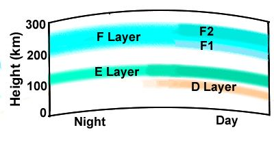

HF radio waves hit the ionosphere and are reflected. As a result, HF radio waves can travel long distances around the Earth, making them suitable for maintaining communication with ocean-going ships. The antenna of an HF radio set is deployed to receive these waves from the sky, which are commonly known as sky waves. It is worth mentioning that VHF (Very High Frequency) and UHF (Ultra High Frequency) waves are not reflected by the ionosphere and are only suitable for line-of-sight communication. The ionosphere has several layers (see figure below). The F layer extends roughly from 200 km to 300 km above the Earth's surface and is responsible for the propagation of radio waves over long distances.
এইচএফ রেডিও তরঙ্গ আয়নোস্ফিয়ারে আঘাত করে এবং প্রতিফলিত হয়। ফলস্বরূপ, এইচএফ রেডিও তরঙ্গগুলি পৃথিবীর চারপাশে দীর্ঘ দূরত্ব ভ্রমণ করতে পারে, যা তাদের সমুদ্রগামী জাহাজের সাথে যোগাযোগ বজায় রাখার জন্য উপযুক্ত করে তোলে। একটি এইচএফ রেডিও সেটের অ্যান্টেনা আকাশ থেকে এই তরঙ্গগুলি গ্রহণ করার জন্য স্থাপন করা হয়, যা সাধারণত আকাশ তরঙ্গ হিসাবে পরিচিত। এটি উল্লেখ করার মতো যে VHF (খুব উচ্চ ফ্রিকোয়েন্সি) এবং UHF (আল্ট্রা হাই ফ্রিকোয়েন্সি) তরঙ্গ আয়নোস্ফিয়ার দ্বারা প্রতিফলিত হয় না এবং শুধুমাত্র লাইন-অফ-সাইট যোগাযোগের জন্য উপযুক্ত। আয়নোস্ফিয়ারে বেশ কয়েকটি স্তর রয়েছে (নীচের চিত্রটি দেখুন)। এফ স্তরটি পৃথিবীর পৃষ্ঠ থেকে প্রায় 200 কিমি থেকে 300 কিলোমিটার পর্যন্ত প্রসারিত এবং দীর্ঘ দূরত্বে রেডিও তরঙ্গের প্রচারের জন্য দায়ী।
FIGURE 22.6: Layers of Ionosphere

চিত্র 22_6 / Figure 22_6
চিত্র 22.6: আয়নোস্ফিয়ারের স্তরগুলি
চিত্র 22_6 / Figure 22_6
During the day, the D and E layers are stronger, but they absorb radio waves, restricting long-distance communication. The density of the atmosphere below the D layer is higher, which prevents ionization from being sustained due to rapid recombination. Therefore, if the layers of ionosphere fall, long- distance communication would be disrupted. The ionosphere is prevented from collapsing to ensure the functionality of communication for ocean-going ships.
দিনের বেলায়, ডি এবং ই স্তরগুলি শক্তিশালী হয়, তবে তারা রেডিও তরঙ্গ শোষণ করে, দূর-দূরত্বের যোগাযোগকে সীমাবদ্ধ করে। ডি স্তরের নীচে বায়ুমণ্ডলের ঘনত্ব বেশি, যা দ্রুত পুনঃসংযোগের কারণে আয়নকরণকে টিকিয়ে রাখতে বাধা দেয়। অতএব, আয়নোস্ফিয়ারের স্তরগুলি পড়ে গেলে, দূর-দূরত্বের যোগাযোগ ব্যাহত হবে। সমুদ্রগামী জাহাজের যোগাযোগের কার্যকারিতা নিশ্চিত করার জন্য আয়নোস্ফিয়ারকে ভেঙে পড়া থেকে রোধ করা হয়।
It is He Who gave you life will cause you to die and will again give you life. Truly, man is a most ungrateful creature!
তিনিই আপনাকে জীবন দিয়েছেন তিনিই আপনাকে মৃত্যু ঘটাবেন এবং আবার আপনাকে জীবন দান করবেন। আসলেই মানুষ সবচেয়ে অকৃতজ্ঞ প্রাণী!
To every people have We appointed rites and ceremonies, which they must follow. Let them not then dispute with you on the matter, but you do invite to your Lord; for you are assuredly on the right way. If they do wrangle with you, say: "God knows best what it is you are doing. God will judge between you on the Day of Judgment concerning the matters in which you differ." Know you not that God know all that is in Skies and Lands? Indeed, it is all in a record, and that is easy for God. Yet they worship besides God things for which no authority has been sent down to them, and of which they have no knowledge; for those that do wrong there is no helper. When Our clear verses are rehearsed to them, you will notice a denial on the faces of the Unbelievers! They nearly attack with violence those who rehearse Our verses to them. Say, "Shall I tell you of something worse than these verses? It is the Fire! God has promised it to the Unbelievers, and evil is that destination!" O men! Here is a parable set forth, so listen to it! Those on whom besides God you call cannot create a fly, even though they combine together for the purpose! And if the fly should snatch away anything from them, they would have no power to release it from the fly. So weak are the seeker and the south. No just estimate have they made of God; for God is He Who is strong and able to carry out His will. God chooses messengers from angels and from men; for God is He Who hears and sees. He knows what is before them and what is behind them; and to God go back all matters.
প্রত্যেক জাতির জন্য আমি আচার-অনুষ্ঠান নির্ধারণ করেছি, যা তাদের অবশ্যই পালন করতে হবে। অতঃপর তারা যেন তোমার সাথে এ বিষয়ে বিতর্ক না করে, বরং তুমি তোমার পালনকর্তার দিকে দাওয়াত দাও। কারণ আপনি নিশ্চিতভাবে সঠিক পথে আছেন। যদি তারা আপনার সাথে ঝগড়া করে, তবে বলুন: "আপনি যা করছেন তা আল্লাহই ভাল জানেন। আল্লাহ বিচারের দিন তোমাদের মধ্যে যে বিষয়ে মতানৈক্য করছেন সে বিষয়ে ফয়সালা করবেন।" তুমি কি জানো না যে, ঈশ্বর আকাশ ও জমিনে যা কিছু আছে সবই জানেন? নিঃসন্দেহে, এটি সবই একটি রেকর্ডে রয়েছে এবং এটি আল্লাহর পক্ষে সহজ। অথচ তারা আল্লাহকে বাদ দিয়ে এমন কিছুর ইবাদত করে যার কোন প্রমাণ তাদের কাছে নাযিল হয়নি এবং যার কোন জ্ঞান তাদের নেই। যারা অন্যায় করে তাদের কোন সাহায্যকারী নেই। যখন তাদের কাছে আমার সুস্পষ্ট আয়াত পাঠ করা হবে, তখন আপনি অবিশ্বাসীদের মুখের উপর অস্বীকৃতি লক্ষ্য করবেন। তারা প্রায় সহিংসতার সাথে আক্রমণ করে যারা তাদের কাছে আমাদের আয়াতগুলি পাঠ করে। বলুন, "আমি কি তোমাদেরকে এই আয়াতের চেয়েও খারাপ কিছুর কথা বলবো? তা হল আগুন! আল্লাহ কাফেরদের কাছে এর ওয়াদা করেছেন, আর সেই গন্তব্যস্থল মন্দ!" হে পুরুষ! এখানে একটি দৃষ্টান্ত দেওয়া হল, তাই শোন! আল্লাহ ব্যতীত যাদেরকে তোমরা ডাকো তারা একটি মাছি সৃষ্টি করতে পারে না, যদিও তারা উদ্দেশ্যের জন্য একত্রিত হয়! আর মাছি যদি তাদের কাছ থেকে কিছু ছিনিয়ে নেয়, তবে মাছি থেকে তা ছাড়ার ক্ষমতা তাদের থাকবে না। তাই দুর্বল অন্বেষণকারী এবং দক্ষিণা। তারা ঈশ্বরের কোন সঠিক অনুমান করেনি; কারণ ঈশ্বর হলেন তিনি যিনি শক্তিশালী এবং তাঁর ইচ্ছা পালন করতে সক্ষম। ঈশ্বর ফেরেশতা এবং মানুষের মধ্য থেকে বার্তাবাহক বাছাই করেন; কারণ আল্লাহই শোনেন ও দেখেন। তিনি জানেন যা তাদের সামনে এবং যা তাদের পিছনে রয়েছে; এবং ঈশ্বরের কাছে সমস্ত বিষয় ফিরে যান।
Muslims living in distant lands (beyond the Home of Ummah, which extends from Morocco to the Pamirs) encounter many rituals followed by the local people of other religions. While Muslims are aware of the rituals they should follow, some adopt the rites and ceremonies of idolaters and secular individuals who are unwilling to listen to even a few verses of the Quran.
দূরবর্তী দেশে বসবাসকারী মুসলিমরা (উম্মাহর হোমের বাইরে, যা মরক্কো থেকে পামির পর্যন্ত বিস্তৃত) অন্যান্য ধর্মের স্থানীয় লোকেরা অনুসরণ করে অনেক আচার-অনুষ্ঠানের সম্মুখীন হয়। যদিও মুসলমানরা তাদের অনুসরণ করা আচার-অনুষ্ঠান সম্পর্কে সচেতন, কেউ কেউ মূর্তিপূজক এবং ধর্মনিরপেক্ষ ব্যক্তিদের আচার-অনুষ্ঠান গ্রহণ করে যারা এমনকি কুরআনের কয়েকটি আয়াতও শুনতে চায় না।
O you who believe, bow down, prostrate yourselves, and adore your Lord, and do good that you may prosper. And strive in His cause, as you ought to strive. He has chosen you and has imposed no difficulties on you in religion. It is the cult of your father Abraham. It is He Who has named you Muslims—both before and in this—that the Apostle may be a witness for you, and you be witnesses for mankind! So, establish As-Salat, give Zakat, and hold fast to God! He is your Protector, the Best to protect and the Best to help!
হে ঈমানদারগণ, তোমরা রুকু কর, সিজদা কর এবং তোমাদের রবের ইবাদত কর এবং সৎকর্ম কর যাতে তোমরা সফলকাম হতে পার। এবং তাঁর পথে জিহাদ কর, যেভাবে তোমাদের সংগ্রাম করা উচিত। তিনি আপনাকে মনোনীত করেছেন এবং ধর্মের ব্যাপারে আপনার উপর কোন অসুবিধা আরোপ করেননি। এটা তোমার পিতা আব্রাহামের ধর্ম। তিনিই তোমাদের নাম রেখেছেন মুসলিম- আগে ও এখানে- যাতে রসূল তোমাদের জন্য সাক্ষী হন এবং তোমরা মানবজাতির জন্য সাক্ষী হতে পার! সুতরাং, সালাত কায়েম করুন, যাকাত প্রদান করুন এবং আল্লাহকে শক্ত করে ধরুন! তিনি আপনার অভিভাবক, রক্ষা করার জন্য সর্বোত্তম এবং সাহায্য করার জন্য সর্বোত্তম!